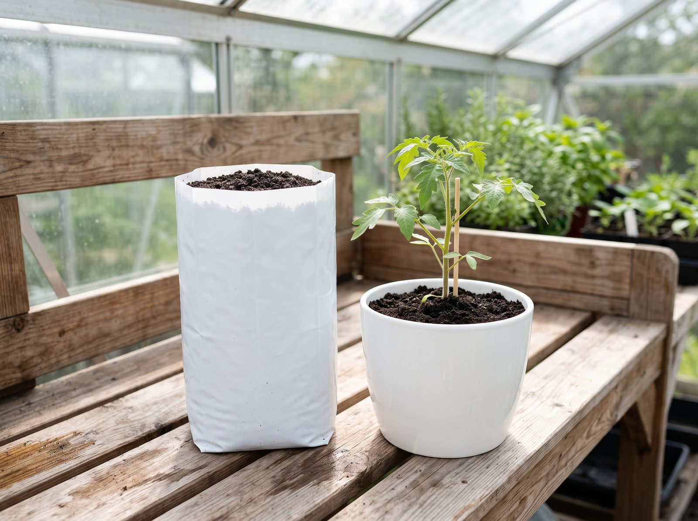
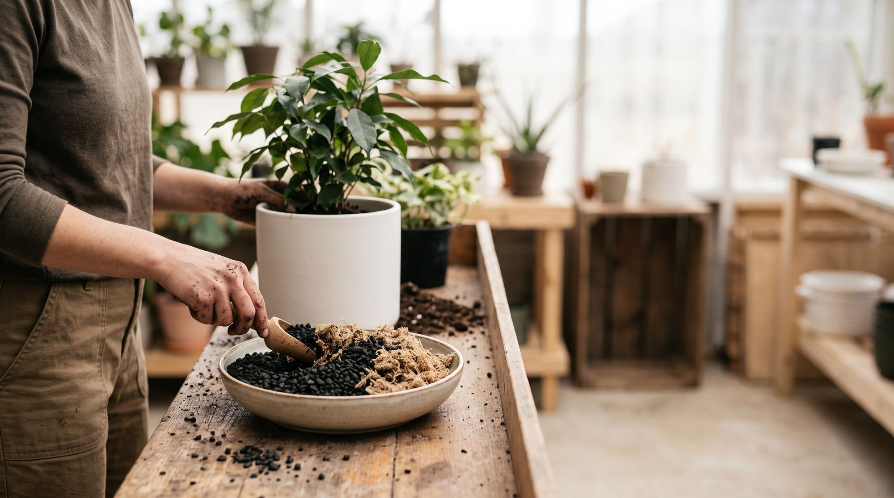
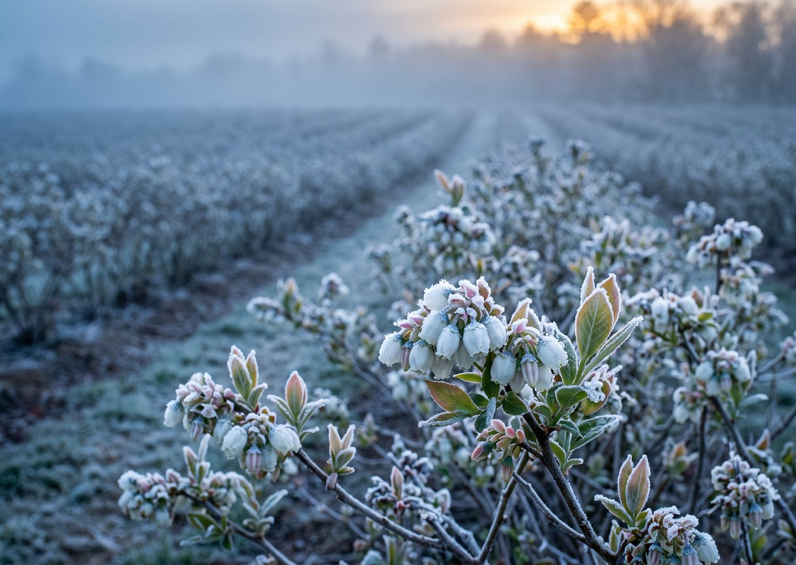
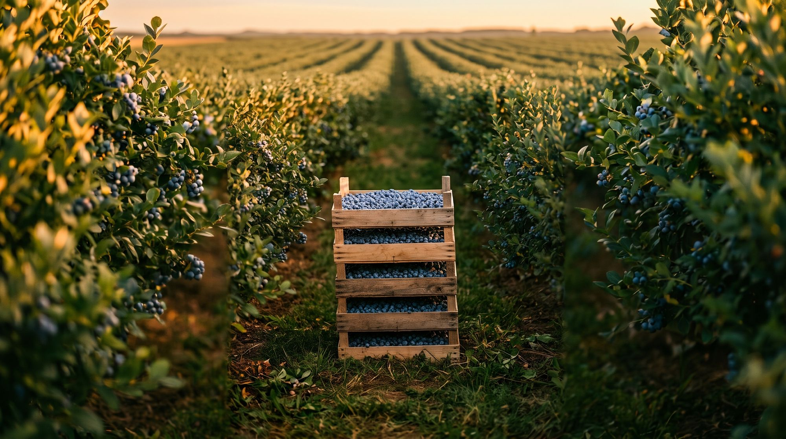

Plantację borówki zakłada się z myślą o wieloletniej uprawie, dlatego już na etapie sadzenia warto zadbać o odpowiednie warunki glebowe, które będą sprzyjać zdrowemu rozwojowi i obfitemu plonowaniu krzewów przez wiele kolejnych lat.
Sadząc krzewy borówki pamiętajmy, że sadzimy rośliny jeden raz w jej długim cyklu życia, więc warto zadbać o to, by warunki przygotowane na początku uprawy, spełniały jak najlepiej swoją rolę przez możliwie najdłuższy czas.
Taka membrana jest w stanie zretencjonowaćnawet kilkadziesiąt procentwięcej wody w obrębie systemu korzeniowego
czyli tam, gdzie jest to najbardziej potrzebne
01 · Dołek lub bruzda
Wodny Stoper
CARBOHUMIC niefiltrowany w formie Wodnego Stopera wzbogaca podłoże w miejscu sadzenia i pomaga utrzymać wodę oraz składniki odżywcze tam, gdzie roślina może mieć trudności z gromadzeniem wody i składników odżywczych.
Stężenie roztworu
5–10%
Jak aplikować
Zalej roztworem dokładnie dołek lub bruzdę.
Ilość cieczy roboczej
wystarczająco, żeby pokryć całą powierzchnię dołka / bruzdy.
Borówka potrzebuje wilgoci, ale źle znosi długotrwałe zalanie i niedotlenienie korzeni. Na ciężkiej, słabo przepuszczalnej glebie priorytetem pozostaje więc drenaż, napowietrzenie i często podniesienie bruzd lub zagonów. Nasz „Stoper” może być dodatkiem do dobrze przygotowanej strefy sadzenia, ale nie zastępuje tych standardowych działań.
Opcjonalnie: wysyp na dno CARBOMAT ECO o frakcji 4–8 mm, żeby dodatkowo rozluźnić zwartą strukturę, uregulować stosunek wodno-powietrzny oraz rozszerzyć strefę organiczną o obniżonym odczynie pod podłożem.
Przygotowanie podłoża to niezwykle istotna kwestia i łatwo na tym etapie popełnić błąd.
Jeśli myślisz o uprawie wieloletniej, zastosuj pod każdą borówkę minimum 150 l gotowej mieszanki podłoża. Korzenie borówki pójdą tylko w bogate w organikę podłoże o odpowiedniej kwasowości, praktycznie nie wyjdą poza jego obręb.
film EcoGarden: mieszanie podłoża – link do uzupełnienia
Proponowane warianty podłoża
Udział torfu kwaśnego: ponad 90%
Testowy i krótkoterminowy
Domieszka do podłoża w bezpośredniej strefie korzeni. Podłoże wysoko organiczne, ponad 90% torfu kwaśnego.
Ilość CARBOMAT ECO5–8 litrów na roślinę.

Udział torfu kwaśnego: 50–80%
Standardowy, zrównoważony
Wyliczyć szacunkową objętość konkretnego zagonu lub dołka oraz proporcje składników. Zróżnicowana mieszanka organiczna, spodziewany udział torfu kwaśnego na poziomie 50–80%.
Ilość CARBOMAT ECO10–20% udziału objętościowego całego podłoża.

Udział torfu kwaśnego: 0–50%
Trwały i zasobny lub alternatywnie dla torfu
Gdy mieszanka uwzględnia zróżnicowane komponenty organiczne, w tym glebę rodzimą lub piasek. Sprawdzenie napowietrzenia, osiadania, zasolenia, pH i ekonomiki. Szczególnie polecane do upraw pojemnikowych. Udział torfu w przedziale 0–50%.
Z geologicznego punktu widzenia można uznać, że lignit to starszy brat torfu. Choć dzieli z nim wiele cech wspólnych, posiada także szereg unikalnych zalet, których torfowi brak.
Trwałość w glebie
Substrat torfowy3–5 lat
Węgiel brunatnyponad 20 lat
Lignit jest znacznie trwalszy w glebie – substrat torfowy jest zużywany przez rośliny i drobnoustroje w ciągu kilku lat od zastosowania (szacuje się na 3–5), podczas gdy węgiel brunatny jest odporny na szybką biodegradację i może przetrwać w glebie ponad 20 lat (a biowęgiel – będący składową CARBOMAT ECO, nawet setki).
Woda i nawozy
Gruzełki lignitu posiadają ogromne zdolności sorpcyjne (nawet 60% swojej objętości), które pozwalają zmagazynować w glebie wodę oraz stosowane nawozy. Potrafią również adsorbować lotne cząstki azotu z powietrza.
Struktura podłoża
CARBOMAT ECO ma luźną, gruzełkowatą strukturę, dzięki której podłoże się nie zbija. W efekcie przez cały okres trwania uprawy mamy utrzymane optymalne warunki wodno-powietrzne.
Niski odczyn na lata
Raz dodany do gleby CARBOMAT ECO trwale użyźnia i jednocześnie w naturalny sposób zakwasza nam środowisko glebowe oraz wodę opadową, bez konieczności posiłkowania się środkami chemicznymi. Niski odczyn gleby pozostaje stabilny na lata.
Dodatek albo zamiennik torfu
CARBOMAT ECO możemy stosować jako dodatek do tradycyjnych podłoży torfowych, ale może też stanowić bardziej wartościowy zamiennik torfu w mieszance podłoża.
W pierwszym sezonie priorytetem jest rozwój korzenia i nowych pędów, nie koncentrujemy się na owocach. Obciążenie owocami młodej rośliny ogranicza budowę masy zielonej.
Podlewamy częściej i precyzyjniej, utrzymując wilgotne, dobrze natlenione podłoże. Nie zwiększaj dawek nawozu, żeby „przyspieszyć” przyjęcie słabej sadzonki.
CARBOMAT ECO Ściółka jest dobrym rozwiązaniem dla plantatorów, którzy rośliny mają już posadzone, często starsze i pojawia się konieczność okrywania i kondycjonowania gleby. To gotowa, silnie zhumifikowana materia organiczna, zawierająca substancje humusowe, dlatego jego funkcja nie kończy się na fizycznym przykryciu gleby.
film EcoGarden: rozsypywanie ściółki – link do uzupełnienia
Jedna aplikacja, wieloletnie działanie
Kora, trociny i zrębki z czasem znikają. Lignit jest materiałem znacznie bardziej odpornym na rozkład, dlatego pozostaje w glebie przez dziesiątki lat i nie wymaga tak częstego odtwarzania warstwy ściółki.
Ściółkuje, ale nie konkuruje z borówką o azot
CARBOMAT ECO nie zabiera azotu na własny rozkład. Jest już materiałem stabilnym i zhumifikowanym, więc nie przechodzi szybkiego procesu rozkładu jak świeże drewno. Mikroorganizmy rozkładające drewno potrzebują azotu i mogą czasowo go immobilizować.
Trwałe zakwaszanie podłoża
Torf z czasem traci wpływ na odczyn i coraz większe znaczenie zaczyna mieć gleba rodzima. CARBOMAT ECO to trwały, kwaśny komponent, który pomaga długofalowo utrzymać stabilne warunki w strefie korzeniowej borówki.
Nie tylko ograniczenie parowania, ale i magazynowanie wody
CARBOMAT ECO nie tylko ogranicza parowanie, ale dzięki porowatej strukturze lignitu magazynuje wodę w strefie korzeniowej. Grubsza frakcja pozostaje przewiewna, nie zasklepia powierzchni i nie ogranicza wymiany gazowej gleby.
Ściółka i kondycjoner gleby w jednym
CARBOMAT ECO jest bogatym źródłem łatwo uwalnianych form substancji humusowych, dlatego jego działanie nie ogranicza się wyłącznie do fizycznego okrycia powierzchni gleby. To materiał, który trwale wzbogaca środowisko glebowe, wspiera jego żyzność i stopniowo poprawia właściwości fizyko-chemiczne.
Podnosi temperaturę gleby
Lignit pod wpływem wilgoci wytwarza ciepło, które podnosi temperaturę gleby wokół roślin, umożliwiając rozszerzenie okresu wegetacji. Dodatkowo ciemny kolor surowca naturalnie przyciąga promienie słoneczne.
Zapobiega gniazdowaniu gryzoni
W przeciwieństwie do zrębek czy torfu, CARBOMAT ECO ma luźną, gruzełkowatą strukturę, która skutecznie uniemożliwia tworzenie gniazd myszy czy nornic.
W zależności od tego, jaki efekt chcesz osiągnąć w sezonie, oferujemy dwa podejścia do aplikacji CARBOHUMICU. CARBOHUMIC niefiltrowany przeznaczony jest dla tych, którzy chcą przede wszystkim długofalowo poprawiać właściwości gleby, wzbogacać ją w materię organiczną i substancje humusowe oraz pracować nad strefą korzeniową. CARBOHUMIC filtrowany sprawdzi się tam, gdzie celem jest bardziej bieżące wsparcie roślin, biostymulacja i poprawa wykorzystania składników pokarmowych, z możliwością aplikacji przez systemy fertygacyjne.
W zależności od tego, czego roślina potrzebuje w danym momencie sezonu, oferujemy dwa kierunki biostymulacji dolistnej. CARBOHUMIC MAXI PLUS sprawdzi się tam, gdzie celem jest pobudzenie metabolizmu, budowa masy zielonej, poprawa transportu składników oraz wsparcie regeneracji roślin po stresie pogodowym, mechanicznym lub chemicznym. CARBOHUMIC CALBOR wybieramy wtedy, gdy oprócz działania biostymulującego chcemy dodatkowo dostarczyć wapń i bor, wspierając prawidłowy rozwój owoców, ich jakość oraz ograniczając skutki okresowych niedoborów tych składników.
Produkt niefiltrowany, zatem unikaj stosowania go przez urządzenia posiadające dokładne filtry (np. fertygacja)
Ważne
Nie kieruj się wartością pH CARBOHUMICU stosując go pod borówkę, raczej zwróć uwagę na pH oraz miękkość wody. Przy stężeniach i ilościach, jakie zalecamy, CARBOHUMIC nie wpłynie na odczyn wody, a tym bardziej na odczyn podłoża.
Nie kieruj się wartością pH CARBOHUMICU stosując go pod borówkę, raczej zwróć uwagę na pH oraz miękkość wody. Przy stężeniach i ilościach, jakie zalecamy, CARBOHUMIC nie wpłynie na odczyn wody, a tym bardziej na odczyn podłoża.

Po gradobiciu
Po regeneracji
Miejsce na zdjęcia z plantacji od CarboHortu
Po gradobiciu i po regeneracji – zdjęcia, miejsce, daty, produkt i dawka do uzupełnienia przez CarboHort.
Cały sezon wegetacyjny – biostymulacja nalistna
Zabiegi w fazie wegetatywnej
Pierwszy zabieg wykonujemy już na etapie pękania pąków i kontynuujemy zgodnie z harmonogramem.
Nie przekraczamy zalecanych dawek. W przypadku oprysków nalistnych kluczowa jest zasada mniej a częściej.
Pakiety
Trzy pakiety z dawką na hektar
Pakiety obejmują produkty, które mają dawkę na hektar: CARBOHUMIC niefiltrowany doglebowo, CARBOMAT ECO Ściółka, CARBOHUMIC MAXI PLUS i CARBOHUMIC CALBOR. Podłoże, Wodny Stoper i fertygację dobierasz indywidualnie z doradcą CarboHort.
Pakiet minimum · dolne granice zaleceń
Na hektar · co roku
CARBOHUMIC niefiltrowany · 2 zabiegi100 l/haKup w sklepie
Ogrodników powinien interesować przede wszystkim ten młody – lignit, o niższym stopniu karbonizacji a większym utlenieniu, znajdujący się w płytkich złożach. Jest on zwieńczeniem setek tysięcy lat powolnego, geologicznego „trawienia”, czyli rozkładu różnorodnej, czystej, prehistorycznej materii organicznej przy udziale pirolizy (tj. nieśpiesznego, wieloletniego procesu spalania w relatywnie niskiej temperaturze i bez dostępu powietrza) oraz podwyższonego ciśnienia. Są to warunki nie do odtworzenia w sposób sztuczny. W wyniku wszystkich tych niezwykle złożonych i czasochłonnych procesów powstała wysoce stabilna, niezwykle pożywna materia organiczna, zawierająca węgiel organiczny, makro i mikroelementy, pierwiastki śladowe oraz wiele innych naturalnych składników, takich jak aminokwasy czy zdrowe tłuszcze, które uwalniają się do gleby stopniowo wraz z powolną biodegradacją surowca.
Przede wszystkim dlatego, że węgiel jest nieporównywalnie bardziej zasobny w trwałe substancje humusowe niż takie trociny lub zrębki (świeże bądź przekompostowane), przez co zdecydowanie lepiej i dłużej odżywia okryte nim rośliny i glebę. Warto też pamiętać, że trociny – jak każda świeża materia organiczna – będzie ulegać bardzo szybkiej mineralizacji, co będzie wymagało częstego uzupełniania materiału. Poza tym bakterie w trakcie rozkładu będą zużywać znaczne ilości azotu z gleby (niezbędnego w procesie rozkładu resztek), tak bardzo potrzebnego również roślinom w fazie wegetacji. Wiąże się to w efekcie z dodatkową koniecznością suplementacji roślin tym pierwiastkiem. Co równie istotne, CARBOMAT ECO ma sypką, gruzełkowatą strukturę, która bardzo utrudnia gniazdowanie gryzoniom.
Bardzo trudno to jednoznacznie określić, biorąc pod uwagę złożoność chemiczną surowca oraz występujące w nim strukturalne formy pochodnych węgla (pierwiastka). Z jednej strony węgiel brunatny zawiera organiczne cząsteczki humusu, które łatwo rozpuszczają się w wodzie, są szybciej wypłukiwane lub zużywane przez rośliny oraz drobnoustroje, z drugiej zaś jest bogaty w bardzo trwały węgiel aktywny (biowęgiel), który może pozostawać w glebie nawet przez tysiące lat. Na pytanie „jak często stosować CARBOMAT ECO?” odpowiedź niestety również nie jest oczywista, gdyż każda gleba jest inna i na przestrzeni lat podlega innym procesom biologicznym i chemicznym. Najlepiej byłoby, gdyby termin kolejnej aplikacji wskazała rzetelna analiza chemiczna gleby. Ale z całą pewnością można stwierdzić, że takie jednorazowe zastosowanie CARBOMAT ECO w ilości powyżej 10% udziału podłoża starczy na okres co najmniej 10 lat.
Przede wszystkim dlatego, że CARBOMAT ECO jest produktem stałym, o zwartej strukturze, w związku z czym potrzebuje trochę czasu nim zacznie się skutecznie wypłukiwać i biodegradować, a w konsekwencji inkorporować z glebą. Z kolei CARBOHUMIC jest już rozpuszczonym lignitem, aktywowanym, który wchodzi w reakcję z glebą i roślinami nieomal natychmiast – jest dużo łatwiej i szybciej przyswajany przez rośliny, choć z drugiej strony jest mniej trwały niż CARBOMAT ECO. Oba produkty wzajemnie świetnie się uzupełniają.
CARBOHUMIC doglebowo
Teoretycznie każda pora roku jest dobra, żeby zacząć dbać o swoją glebę lub kondycję roślin, jednak jest kilka okresów w życiu plantacji, kiedy stosowanie humusu jest wyjątkowo dobrze uzasadnione. To jest okres przygotowania gleby pod sadzenie, start wegetacji roślin, okres pozbiorczy, okresy po opadach itp. Wszelkie badania dowodzą, że humusy są najlepiej wchłaniane przez rośliny w niedużym stężeniu, ale podawane częściej, stąd zalecane dawkowanie powinno ten czynnik uwzględniać. Nieduże stężenie powoduje, że humus dużo lepiej przenika w głąb gleby i się z nią inkorporuje (staje się jej częścią). Dodatkowym ważnym czynnikiem poprawiającym mobilność humusów w glebie jest jej odpowiednia wilgotność, dlatego dobrze jest stosować CARBOHUMIC w okresie po opadach.
Musimy pamiętać, że z każdym kolejnym rokiem uprawy następuje dość znaczny ubytek materii organicznej na plantacji. Organika włożona do gleby w pierwszym roku podczas nasadzenia ulega w dużej mierze mineralizacji praktycznie już po 3–5 latach. Tylko niewielki jej ułamek się humifikuje, stając się cennym kapitałem naszej gleby w postaci próchnicy. Zatem tak, jak najbardziej zachęcamy do regularnego, corocznego stosowania preparatu, w celu wyrównania strat w bilansie materii organicznej po każdym roku.
Oczywiście, CARBOHUMIC jest certyfikowanym produktem ekologicznym, zarejestrowanym nie tylko w Polsce, ale również w europejskim rejestrze produktów dopuszczonych do stosowania w rolnictwie ekologicznym – szwajcarskim FiBL oraz holenderskim Skal.
Efekty będą wyraźnie zauważalne już w pierwszym roku od zastosowania, a różnica w pokroju będzie z całą pewnością widoczna gołym okiem. Poprawie ulegnie cała morfologia rośliny; pędy będą dłuższe, mocniejsze i grubsze, będzie też ich więcej, liście zwiększą swoją liczbę, objętość, pogłębią swój kolor, zagęści się też częstotliwość węzłów liści na łodygach – skrócone międzywęźla, lepiej rozbuduje się korzeń itd. Wszystko to przełoży się na większy potencjał plonotwórczy.
Produkty nalistne
Składniki odżywcze aplikowane dolistnie są dużo szybciej wchłaniane przez rośliny niż ma to miejsce w przypadku poboru z gleby. Już w ciągu 8 godzin po zastosowaniu KH wykrywane są zmiany w wielu różnych procesach metabolicznych rośliny, np. zwiększoną produkcję węglowodanów można wykryć w ciągu 24 do 48 godzin po dokarmianiu dolistnym za pomocą refraktometru. Rośliny reagują wolniej na stosowanie KH w glebie, ponieważ duży procent substancji humusowych jest zatrzymywany w korzeniach podczas wzrostu roślin (w większości przypadków mniej niż 30% KH obecnych w korzeniach jest przenoszonych w górę łodyg do liści roślin).
Skuteczność działania KH bez wątpienia najlepiej widać na młodych tkankach roślin, głównie z tego względu, że młodsze tkanki mają aktywne mechanizmy transportowe, które przenoszą wymagane składniki odżywcze do konkretnych miejsc aktywności metabolicznej. Dolistne stosowanie substancji humusowych na aktywnie rosnące liście powoduje większy wzrost roślin w porównaniu z dolistnym stosowaniem na starsze liście. Aktywnie rosnące części roślin, zaangażowane w podziały komórkowe i inne procesy wzrostu, łatwo integrują różne minerały śladowe i związki regulujące wzrost z trwającymi w danym czasie procesami metabolicznymi, w przeciwieństwie do starszych części roślin, u których procesy metaboliczne uległy już spowolnieniu, uniemożliwiając tym samym skuteczne wykorzystanie dodanych składników odżywczych.
Na wstępie trzeba zaznaczyć, że niskie stężenie stosowania produktów nalistnych nie wynika z ich fitotoksyczności lub silnej koncentracji czynników aktywnych. KH są bardzo dobrze przyswajalne przez rośliny pod warunkiem, że są stosowane w niedużym stężeniu. Roślina ma określone możliwości przyswajania czegokolwiek przez liście (błony komórkowe), więc aplikacja stężonych środków powyżej pewnej granicy jest po prostu nieefektywna. Lepiej jest zatem aplikować preparat w mniejszych dawkach, ale częściej. Przy wyższych stężeniach, powyżej 100 mg suchych KH na litr, wzrost roślin, pędów, a nawet korzeni może zostać zahamowany, w zależności od aktywności testowanych substancji. Dolistne stosowanie relatywnie małych jednostek molekularnych KH, zawierających minerały śladowe może też być zaplanowane w czasie, aby zaspokoić potrzeby określonych wymagań wzrostu roślin. Aplikacje można zaplanować tak, aby stymulować wzrost wegetatywny, kwitnienie, zawiązywanie owoców lub napełnianie i dojrzewanie owoców.
Kwasy humusowe bardzo dobrze wpisują się w kompleksowe programy odżywiania i biostymulacji. Można je łączyć z nawożeniem makro- i mikroelementowym, ekstraktami z alg, aminokwasami, biostymulatorami oraz rozwiązaniami biologicznymi. Dzięki temu mogą pełnić rolę „łącznika” pomiędzy odżywianiem rośliny, biostymulacją i pracą nad aktywnością strefy korzeniowej.
Przy mieszaninach zbiornikowych zawsze należy sprawdzić kompatybilność produktów, pH cieczy i wykonać próbę mieszalności.

Skontaktuj się z nami
W celu ustalenia precyzyjnych zaleceń stosowania dla produktów CarboHort, serdecznie zachęcamy do kontaktu z naszymi specjalistami.
Produkt gęsty, zawiesisty, bogaty w materię organiczną – suchą masę, przeznaczony do skokowego użyźnienia gleby bądź przygotowania gleby do nasadzeń.
Cel stosowania
uzdatnianie gleb jałowych i zdegradowanych, poprzez dostarczanie trwałej, czystej, stabilnej i zhumifikowanej materii organicznej,
przygotowanie gleby do sadzenia,
poprawa retencji wody,
uzupełnianie strat materii organicznej w glebie po każdym roku uprawowym,
rekultywacja gleb zanieczyszczonych,
budowanie trwałej i stabilnej próchnicy glebowej,
tworzenie kompleksu sorpcyjnego w glebie (magazynu dla składników odżywczych i wody),
stymulacja życia biologicznego w glebie,
optymalizacja nawożenia,
budowanie struktury gleby,
stabilizacja odczynu gleby,
wspomaganie ukorzeniania roślin.
Sposób aplikacji
polewanie ręczne, z beczki lub mauzera.Produkt niefiltrowany, zatem unikaj stosowania go przez urządzenia posiadające dokładne filtry (np. fertygacja)
Dawka roczna
100–600 l/ha
Ilość zabiegów w ciągu roku
1–3. Należy ją podzielić na co najmniej dwa zabiegi w ciągu sezonu.
Zalecane stężenie roztworu roboczego na zabieg
3–10%
Vinassa
Producentom, którzy nie stosują regularnie innego nawożenia organicznego, zalecamy połączenie doglebowej aplikacji niefiltrowanego CARBOHUMICU z innym produktem organicznym – Vinassą. Oba produkty można stosować w jednym roztworze w proporcji 1:1.
Odczyn
Nie kieruj się wartością pH CARBOHUMICU stosując go pod borówkę, raczej zwróć uwagę na pH oraz miękkość wody. Przy stężeniach i ilościach, jakie zalecamy, CARBOHUMIC nie wpłynie na odczyn wody, a tym bardziej na odczyn podłoża.
Wodny Stoper
CARBOHUMIC niefiltrowany w formie Wodnego Stopera wzbogaca podłoże w miejscu sadzenia i pomaga utrzymać wodę oraz składniki odżywcze tam, gdzie roślina może mieć trudności z gromadzeniem wody i składników odżywczych.
Dlaczego warto stosować:
Na glebach lekkich ogranicza szybkie przemieszczanie się wody i składników w głąb profilu. Piaski szybko przesychają i łatwiej dochodzi na nich do wymywania, dlatego poprawa lokalnego magazynowania wody przy korzeniach jest tu szczególnie istotna.
Na glebach cięższych Wodny Stoper z jednej strony stopniowo rozszczelnia gleby zwięzłe, a z drugiej przekłada się na wzrost całkowitej i dostępnej pojemności wodnej.
Stężenie roztworu
5–10%
Jak aplikować
Zalej roztworem dokładnie dołek lub bruzdę.
Ilość cieczy roboczej
wystarczająco, żeby pokryć całą powierzchnię dołka / bruzdy.
Taka membrana jest w stanie zretencjonować nawet kilkadziesiąt procent więcej wody w obrębie systemu korzeniowego, czyli tam, gdzie jest to najbardziej potrzebne.
CARBOMAT ECO w formie dodatku do gleby to mieszanka frakcji między 2–4 oraz 4–8 mm, którą z powodzeniem można stosować w niemal każdych warunkach glebowych lub własnych mieszankach podłoży. Produkt, będący w zasadzie czystą i zhumifikowaną materią organiczną, jest znakomitym kapitałem, jeśli chodzi o rewitalizację zmęczonej wieloletnimi uprawami gleby lub przygotowanie i użyźnienie gleby pod nowe nasadzenia krzewów.
Naturalnie niskie pH surowca (w przedziale 4,5–5,2) czyni CARBOMAT ECO materiałem wręcz stworzonym do efektywnej produkcji borówki.
Składniki podłoża
Obok CARBOMAT ECO składnikami podłoża mogą być np.: torf, trociny, przekompostowana kora drzew iglastych, igliwie, gleba rodzima w zmiennych proporcjach itp.
Uprawy doniczkowe
Produkt świetnie sprawdzi się jako samodzielne podłoże lub dodatek do podłoża w uprawach doniczkowych – w formie domieszki bądź jako warstwa drenażowa na spodzie doniczki.
Trwałość
jednorazowe zastosowanie CARBOMAT ECO w ilości powyżej 10% udziału podłoża starczy na okres co najmniej 10 lat
Proponowane warianty podłoża
Proponowany wariant
Zasada stosowania
Ilość CARBOMAT ECO
Testowy i krótkoterminowy
Domieszka do podłoża w bezpośredniej strefie korzeni. Podłoże wysoko organiczne, ponad 90% torfu kwaśnego.
5–8 litrów na roślinę.
Standardowy, zrównoważony
Wyliczyć szacunkową objętość konkretnego zagonu lub dołka oraz proporcje składników. Zróżnicowana mieszanka organiczna, spodziewany udział torfu kwaśnego na poziomie 50–80%.
10–20% udziału objętościowego całego podłoża.
Trwały i zasobny lub alternatywnie dla torfu
Gdy mieszanka uwzględnia zróżnicowane komponenty organiczne, w tym glebę rodzimą lub piasek. Sprawdzenie napowietrzenia, osiadania, zasolenia, pH i ekonomiki. Szczególnie polecane do upraw pojemnikowych. Udział torfu w przedziale 0–50%.
>30% objętości całego podłoża.
Jeśli myślisz o uprawie wieloletniej, zastosuj pod każdą borówkę minimum 150 l gotowej mieszanki podłoża.
CARBOMAT ECO Ściółka to gruzełki lignitu o frakcji w zakresie 4–8 lub 8–20 mm. Poza standardowymi korzyściami jakie daje praktycznie każdy materiał ściółkujący, CARBOMAT ECO – regularnie opłukiwany wodą – stanowi niezwykle cenne uzupełnienie gleby o wartościowe składniki odżywcze, głównie w postaci mocno skondensowanej materii organicznej i substancji humusowych.
Dzięki naturalnie niskiemu pH, wysokiej zawartości organiki i zdolności buforowej, CARBOMAT ECO naturalnie obniża i stabilizuje odczyn gleby. Z uwagi na fakt, że CARBOMAT ECO jest surowcem już zhumifikowanym, nie wymagającym przekompostowania (jak świeża kora drzewna, zrębki lub trociny), mikroorganizmy nie zużywają azotu, będącego ważnym naturalnym zasobem gleby, do jego rozkładu. Czyli nie powoduje on tzw. głodu azotowego w obrębie roślin. Jest przez to trwalszy i odporniejszy na biodegradację. Co więcej lignit pod wpływem wilgoci wytwarza naturalne ciepło, które podnosi temperaturę gleby wokół roślin, umożliwiając rozszerzenie okresu ich wegetacji.
CARBOMAT ECO Ściółka jest dobrym rozwiązaniem dla plantatorów, którzy rośliny mają już posadzone, często starsze i pojawia się konieczność okrywania i kondycjonowania gleby.
Frakcja
gruzełki lignitu o frakcji w zakresie 4–8 lub 8–20 mm
Wskazówki
Ilość materiału do ściółkowania dostosowujemy do wieku oraz wielkości krzewów. Wraz ze wzrostem rośliny ilość CARBOMAT ECO powinna być proporcjonalnie większa.
Produkt możemy swobodnie mieszać z innymi materiałami ściółkującymi, w celu podniesienia ich walorów ogrodniczych. Pamiętajmy tylko, by CARBOMAT ECO był wysypany bezpośrednio na glebę.
Już nawet niewielka ilość ściółki CARBOMAT ECO ma nieoceniony wpływ na stan i kondycję gleby oraz utrzymanie niskiego pH podłoża na lata, bez stosowania środków chemicznych.
W celu wzmocnienia ochrony przeciw porastaniu chwastów, przed wysypaniem ściółki zalecamy oczyścić glebę z chwastów i usypać grubszą warstwę produktu – nawet powyżej 8 cm. Opcjonalnie można pokryć glebę agro- lub geowłókniną.
Jak obliczyć zapotrzebowanie na ściółkę CARBOMAT ECO?
Metoda ściółkowania
Rekomendowane dawki
Profesjonalna produkcja
Uprawa hobbystyczna
rzędowa
Zależna od wieku roślin, budżetu i mieszanki materiałów ściółkujących.
Około 36 m³ / ha w przypadku łącznego stosowania innych materiałów lub przy roślinach młodych.
Około 72 m³ / ha przy stosowaniu samego CARBOMAT ECO i/lub roślinach starszych
Około 300 l / 10 mb
punktowa
–
rośliny poniżej 10 lat → 10 l / roślinę (minimum 5 l)
rośliny powyżej 10 lat → 20 l / roślinę (minimum 10 l)
Produkt oczyszczony z nierozpuszczalnych cząstek stałych materii organicznej do poziomu 187 mesh / 80 µm o niższej zawartości suchej masy.
Cel stosowania
bieżące dożywianie roślin w całym okresie wegetacyjnym,
krótkookresowa biostymulacja roślin i środowiska glebowego,
optymalizacja nawożenia i poprawa skuteczności dokarmiania roślin poprzez chelatowanie składników mineralnych przy łącznym stosowaniu z innymi nawozami,
budowanie w glebie kompleksu sorpcyjnego zatrzymującego wodę i składniki odżywcze,
rewitalizacja mikrobiomu glebowego,
dostarczanie do gleby wysoce aktywnych składników organicznych, w tym rozpuszczalnych w wodzie substancji humusowych, które reagują z glebą i roślinami niemal natychmiast po zastosowaniu,
wspomaganie ukorzeniania roślin.
Forma aplikacji
opryskiwacze, belki herbicydowe, zraszacze, linie kroplujące.
Filtracja
Produkt przefiltrowany do zakresu 187 mesh / 80 µm.
Dawka roczna
50–120 l/ha. Dawka zależna jest od liczby przyjętych zabiegów w cyklu uprawowym.
Dawka na cykl
5–10 l / ha
Stężenie
0,5–1% na zabieg
Częstotliwość
10–14 dni. Należy wykonać przynajmniej 5 cykli w sezonie, startując wraz z ruszeniem wegetacji.
Mieszalność i odczyn
Roztwór przygotowuj w osobnym, czystym zbiorniku i wstępnie rozcieńczaj. Nie dodawaj bez sprawdzenia do stężonych roztworów wapniowych, fosforanowych i mocno kwaśnych. Wykonaj test zgodności i obserwuj pH/EC po aplikacji. Produkt filtrowany nie daje gwarancji braku osadu w każdej wodzie i każdym zestawie nawozów.
Odczyn
Nie kieruj się wartością pH CARBOHUMICU stosując go pod borówkę, raczej zwróć uwagę na pH oraz miękkość wody. Przy stężeniach i ilościach, jakie zalecamy, CARBOHUMIC nie wpłynie na odczyn wody, a tym bardziej na odczyn podłoża.
Produkt dedykowany budowie masy liściastej, pod względem wielkości oraz ilości.
Cel stosowania
dolistne dokarmianie części nadziemnych roślin w okresie wegetatywnym,
zwiększanie efektywności fotosyntezy,
usprawnianie transportu wody i składników mineralnych wewnątrz rośliny,
budowanie odporności na stresy biotyczne i abiotyczne,
stymulacja podziału komórkowego roślin,
regulacja gospodarki hormonalnej roślin – w tym zwiększenie produkcji fitohormonów, takich jak auksyny, cytokiny czy gibereliny.
Forma aplikacji
opryskiwacze, belki herbicydowe, zraszacze.
Dawka roczna
3–5 litrów / ha
Zalecana liczba zabiegów
3–5 / rok. Minimalna liczba zabiegów to 3.
Zalecana dawka na zabieg
0,6–1 l / ha
Częstotliwość stosowania
Co 10–14 dni
Stężenie
0,1–0,5%
Zabiegi w fazie wegetatywnej
Pierwszy zabieg wykonujemy już na etapie pękania pąków i kontynuujemy zgodnie z harmonogramem.W początkowej fazie połącz opcjonalnie MAXI PLUS z mikroelementami (PURE ONE) w ilości 0,6 + 0,6 l / ha, a w sytuacji okresowych przymrozków z algami (BIOALGEEN) w ilości 0,6 + 0,6 l / ha.
Przed kwitnieniem
Stosowany przed kwitnieniem zwiększa liczbę bujniejszych i zdrowszych kwiatostanów.
Produkt przeznaczony do stosowania w okresie wzrostu generatywnego. Pierwszy zabieg wykonujemy w fazie opadania kwiatów i kontynuujemy zgodnie z harmonogramem.
Cel stosowania
odżywianie błon komórkowych liści i owoców,
wspomaganie gromadzenia chlorofilu,
regulacja gospodarki hormonalnej umożliwiającej równomierne wybarwianie owoców,
poprawa smaku, zapachu, jędrności i mięsistości owoców,
zapobieganie zaburzeniom fizjologicznym, jak zmniejszenie ilości opadania owoców, ich pękania,
zwiększenie odporności na uszkodzenia mechaniczne, uzupełnianie okresowych niedoborów wapnia i boru.
Forma aplikacji
opryskiwacze, belki herbicydowe, zraszacze.
Dawka roczna
3–5 litrów / ha
Zalecana liczba zabiegów
3–5 / rok. Minimalna liczba zabiegów to 3.
Zalecana dawka na zabieg
0,6–1 l / ha
Częstotliwość stosowania
Co 10–14 dni
Stężenie
0,1–0,5%
Zabiegi w fazie generatywnej
Pierwszy zabieg wykonujemy w fazie opadania kwiatów i kontynuujemy zgodnie z harmonogramem. W okresie zawiązywania owoców połącz opcjonalnie CALBOR z mikroelementami (PURE ONE) w ilości 0,6 + 0,6 l / ha, a w przypadku suszy lub ekstremalnych temperatur z algami (BIOALGEEN) w ilości 0,6 + 0,6 l / ha.
Skład pakietów i dawki w pakietach są roboczą propozycją, do potwierdzenia przez CarboHort.
Co zawiera pakiet
Pakiety obejmują tylko produkty, dla których zalecenia podają dawkę na hektar: CARBOHUMIC niefiltrowany doglebowo, CARBOMAT ECO Ściółka, CARBOHUMIC MAXI PLUS i CARBOHUMIC CALBOR.
Pakiet minimum trzyma się dolnych granic zaleceń: 100 l/ha CARBOHUMIC niefiltrowanego rocznie w dwóch zabiegach, trzy zabiegi CARBOHUMIC MAXI PLUS po 1 l/ha i ok. 36 m³/ha CARBOMAT ECO Ściółka.
Pakiet optimum przyjmuje 300 l/ha CARBOHUMIC niefiltrowanego w trzech zabiegach, po trzy zabiegi CARBOHUMIC MAXI PLUS i CARBOHUMIC CALBOR po 1 l/ha i ok. 36 m³/ha CARBOMAT ECO Ściółka.
Pełen zestaw podnosi dawki do górnych granic zaleceń: 300–600 l/ha CARBOHUMIC niefiltrowanego, po pięć zabiegów CARBOHUMIC MAXI PLUS i CARBOHUMIC CALBOR po 1 l/ha i ok. 72 m³/ha CARBOMAT ECO Ściółka.
Ściółkę stosuje się jednorazowo – kolejną aplikację planuje się co 3–4 lata.
Czego pakiety nie obejmują
Podłoże z CARBOMAT ECO, Wodny Stoper i fertygację CARBOHUMIC filtrowanym każdy dobiera indywidualnie do swojej plantacji – zapytaj doradcę CarboHort. Do pakietów nie wchodzą też etapy 1 i 2, czyli zakładanie plantacji i sadzenie roślin.
Bez kwot
Pakiety pokazują dawkę produktu na hektar, nie koszt. Tam, gdzie zalecenia podają dawkę zakresem, pakiet pokazuje zakres – dawkę roczną najlepiej dopasować do jakości gleby i wieku roślin, a ilość dla swojej plantacji ustalić z doradcą CarboHort.
Lignit a torf
Z geologicznego punktu widzenia można uznać, że lignit to starszy brat torfu. Choć dzieli z nim wiele cech wspólnych, posiada także szereg unikalnych zalet, których torfowi brak.
Zalety
Jest nieporównywalnie bogatszy w stabilną, skondensowaną i zhumifikowaną substancję organiczną.
Gruzełki lignitu posiadają ogromne zdolności sorpcyjne (nawet 60% swojej objętości), które pozwalają zmagazynować w glebie wodę oraz stosowane nawozy. Potrafią również adsorbować lotne cząstki azotu z powietrza.
Lignit jest znacznie trwalszy w glebie – substrat torfowy jest zużywany przez rośliny i drobnoustroje w ciągu kilku lat od zastosowania (szacuje się na 3–5), podczas gdy węgiel brunatny jest odporny na szybką biodegradację i może przetrwać w glebie ponad 20 lat (a biowęgiel – będący składową CARBOMAT ECO, nawet setki).
Lignit (wraz z leonardytem) jest najbogatszym naturalnym źródłem najwyższej jakości, stabilnych, złożonych, trwałych i funkcjonalnych kwasów humusowych, fulwowych oraz huminów, które stopniowo i konsekwentnie są uwalniane do gleby z biegiem czasu, tj. wraz z rozkładem surowca.
Lignit znacząco wspomaga tworzenie kompleksu sorpcyjnego w obrębie ryzosfery – czyli magazynu na składniki odżywcze i wodę, z którego roślina może swobodnie czerpać w trakcie wegetacji.
Dzięki zdolnościom chelatującym substancji humusowych zawartych w CARBOMAT ECO, poprawie ulega wchłanianie i przyswajanie składników odżywczych przez rośliny, również tych uśpionych w glebie.
Skład oraz proporcje substancji humusowych zawartych w naszym lignicie są bardzo zbliżone do tych w trwałej próchnicy glebowej, co pozwala na niemal natychmiastowe i zrównoważone oddziaływanie produktu na środowisko glebowe.
CARBOMAT ECO ma luźną, gruzełkowatą strukturę, dzięki której podłoże się nie zbija. W efekcie przez cały okres trwania uprawy mamy utrzymane optymalne warunki wodno-powietrzne.
Raz dodany do gleby CARBOMAT ECO trwale użyźnia i jednocześnie w naturalny sposób zakwasza nam środowisko glebowe oraz wodę opadową, bez konieczności posiłkowania się środkami chemicznymi. Niski odczyn gleby pozostaje stabilny na lata.
CARBOMAT ECO możemy stosować jako dodatek do tradycyjnych podłoży torfowych, ale może też stanowić bardziej wartościowy zamiennik torfu w mieszance podłoża.
Czy każdy węgiel brunatny nadaje się do gleby?
Ogrodników powinien interesować przede wszystkim ten młody – lignit, o niższym stopniu karbonizacji a większym utlenieniu, znajdujący się w płytkich złożach. Jest on zwieńczeniem setek tysięcy lat powolnego, geologicznego „trawienia”, czyli rozkładu różnorodnej, czystej, prehistorycznej materii organicznej przy udziale pirolizy (tj. nieśpiesznego, wieloletniego procesu spalania w relatywnie niskiej temperaturze i bez dostępu powietrza) oraz podwyższonego ciśnienia. Są to warunki nie do odtworzenia w sposób sztuczny. W wyniku wszystkich tych niezwykle złożonych i czasochłonnych procesów powstała wysoce stabilna, niezwykle pożywna materia organiczna, zawierająca węgiel organiczny, makro i mikroelementy, pierwiastki śladowe oraz wiele innych naturalnych składników, takich jak aminokwasy czy zdrowe tłuszcze, które uwalniają się do gleby stopniowo wraz z powolną biodegradacją surowca.
01 · Doglebowo
Wczesna wiosna, przed ruszeniem wegetacji / jesienią, po zbiorach
Sposób aplikacji: polewanie ręczne, z beczki lub mauzera.
Produkty
CARBOHUMIC niefiltrowany
Produkt niefiltrowany, zatem unikaj stosowania go przez urządzenia posiadające dokładne filtry (np. fertygacja)
Vinassa
Oba produkty można stosować w jednym roztworze w proporcji 1:1.
Szeroki zakres stosowania wynika z kilku czynników, zależy między innymi od:
wieku i wielkości roślin,
kondycji gleby,
stosowania innych nawozów / surowców organicznych.
Górna granica dawkowania jest relatywnie wysoka, szczególnie gdy zawartość materii organicznej w glebie jest niska i potrzebna jest intensywna, szybka regeneracja. Jeśli drzewa mamy młode, np. świeżo po posadzeniu w żyznym podłożu, celujemy w okolice dolnego progu dawki rocznej, z kolei przy starszych, dawkę produktu powinniśmy stosować ze średniego i górnego zakresu, ponieważ niezbędne jest konkretniejsze odbudowywanie glebowych zapasów materii organicznej, zużywanej przez lata produkcji.
Niższe dawki zalecamy w przypadku właśnie młodych roślin, które mają mniejsze wymagania pokarmowe, gleb w dobrej kondycji, za które uznajemy gleby zawierające ponad 3% materii organicznej, lub gotowe, próchnicze podłoża. A także tam, gdzie stosowane są inne źródła świeżej materii organicznej, takie jak obornik, torf, pochodne drzew czy kompost. Jeżeli natomiast rośliny są starsze, gleba jest słaba i wymaga większego dopływu substancji próchnicznych albo program nawożenia nie obejmuje żadnych nawozów organicznych, zalecamy wybór dawki bliższej górnej granicy zakresu.
Ilość zabiegów w ciągu roku: 1–3
Należy ją podzielić na co najmniej dwa zabiegi w ciągu sezonu. Kluczowe terminy w cyklu rozwojowym roślin i funkcjonowaniu gleby to:
początek sezonu wegetacyjnego lub okres bezpośrednio po posadzeniu,
okres bezpośrednio po kwitnieniu, początek owocowania,
okres po zbiorach, w celu wsparcia regeneracji roślin i gleby.
Zalecane stężenie roztworu roboczego na zabieg: 3–10%
Rekomendowane stężenie zależy przede wszystkim od dwóch czynników, tj. dostępności wody oraz rodzaju gleby.
Dostępność wody
Przy ograniczonym dostępie można zdecydować się na mniejszą liczbę przejazdów i zastosować wyższe stężenie, nawet do 10%. Wówczas zalecamy wykonać zabieg będzie wykonywany po opadach lub przed. Wyższe stężenia nie powodują zatrucia roślin. Jeżeli istnieje możliwość zwiększenia ilości wody, warto z niej skorzystać, ponieważ niższe stężenie poprawia przemieszczanie się substancji humusowych w profilu glebowym.
Rodzaj gleby
Stężenie roztworu ma duży wpływ na przenikanie produktu w głąb gleby. Podobnie ważna jest jej wilgotność. Wyższe stężenia można stosować na glebach lekkich i piaszczystych. Na glebach ciężkich, zwięzłych i słabo przepuszczalnych zalecane są stężenia niższe. Wilgotna gleba ułatwia głębsze przemieszczanie się produktu, dlatego najlepiej wykonywać zabieg krótko przed opadami deszczu lub po opadach. Przy gliniastych proponujemy stężenie 3–5%, a dla piaszczystych 5–10%, a dla mozaik 3–7%.
Przykład zastosowania
Ustalamy roczną dawkę na poziomie 300 l/ha i zakładamy, że będzie stosowana w trzech porcjach. Wiosną, po kwitnieniu i jesienią, należy zastosować 100 l/ha w jednym zabiegu.
Przy kwaterze piaszczystej przy dolnej granicy stężenia – 3% wydatek wody wyjdzie na poziomie ok. 3000 l. Przy tych samych parametrach stężenie 5% powinno być rozcieńczone w niecałych 2000 l wody.
Opcjonalne uzupełnienie nawożenia organicznego
Producentom, którzy nie stosują regularnie innego nawożenia organicznego, zalecamy połączenie doglebowej aplikacji niefiltrowanego CARBOHUMICU z innym produktem organicznym – Vinassą. Oba produkty można stosować w jednym roztworze w proporcji 1:1. Przykładowo, jeżeli stosujemy roztwór zawierający 5% CARBOHUMICU, dodajemy również 5% Vinassy.
Podejście to opiera się na zasadzie: im bardziej zróżnicowaną biomasę wprowadzamy do gleby, tym lepiej. W ten sposób dostarczamy jednocześnie stabilną, silnie zhumifikowaną materię organiczną oraz świeżą. Obie pełnią w glebie odmienne, ale wzajemnie uzupełniające się funkcje.
Ważne
Nie kieruj się wartością pH CARBOHUMICU stosując go pod borówkę, raczej zwróć uwagę na pH oraz miękkość wody. Przy stężeniach i ilościach, jakie zalecamy, CARBOHUMIC nie wpłynie na odczyn wody, a tym bardziej na odczyn podłoża.
02 · Fertygacja
Cały sezon wegetacyjny – fertygacja
CARBOHUMIC filtrowany sprawdzi się tam, gdzie celem jest bardziej bieżące wsparcie roślin, biostymulacja i poprawa wykorzystania składników pokarmowych, z możliwością aplikacji przez systemy fertygacyjne.
Produkty
CARBOHUMIC filtrowany
Dawka roczna: 50–120 l/ha
Dawka zależna jest od liczby przyjętych zabiegów w cyklu uprawowym. Należy wykonać przynajmniej 5 cykli w sezonie, startując wraz z ruszeniem wegetacji. Przy sprzyjających warunkach technicznych i agronomicznych warto prowadzić program przez cały okres aktywnej wegetacji. Liczba cykli zależy od długości sezonu. Po zabiegu należy przepłukać instalację czystą wodą i skontrolować filtry.
Dawka na cykl
5–10 l / ha
Stężenie
0,5–1% na zabieg
Częstotliwość
10–14 dni
Mieszalność i odczyn
Roztwór przygotowuj w osobnym, czystym zbiorniku i wstępnie rozcieńczaj. Nie dodawaj bez sprawdzenia do stężonych roztworów wapniowych, fosforanowych i mocno kwaśnych. Wykonaj test zgodności i obserwuj pH/EC po aplikacji. Produkt filtrowany nie daje gwarancji braku osadu w każdej wodzie i każdym zestawie nawozów.
Ważne
Nie kieruj się wartością pH CARBOHUMICU stosując go pod borówkę, raczej zwróć uwagę na pH oraz miękkość wody. Przy stężeniach i ilościach, jakie zalecamy, CARBOHUMIC nie wpłynie na odczyn wody, a tym bardziej na odczyn podłoża.
W zależności od tego, czego roślina potrzebuje w danym momencie sezonu, oferujemy dwa kierunki biostymulacji dolistnej.
Zabiegi w fazie wegetatywnej
Produkty
CARBOHUMIC MAXI PLUS
CARBOHUMIC MAXI PLUS sprawdzi się tam, gdzie celem jest pobudzenie metabolizmu, budowa masy zielonej, poprawa transportu składników oraz wsparcie regeneracji roślin po stresie pogodowym, mechanicznym lub chemicznym.
Zalecenia
Dawka roczna
3–5 litrów / ha
Zalecana liczba zabiegów
3–5 / rok
Zalecana dawka na zabieg
0,6–1 l / ha
Częstotliwość stosowania
Co 10–14 dni
Stężenie
0,1–0,5%
Minimalna liczba zabiegów to 3.
Pierwszy zabieg wykonujemy już na etapie pękania pąków i kontynuujemy zgodnie z harmonogramem.
W początkowej fazie połącz opcjonalnie MAXI PLUS z mikroelementami (PURE ONE) w ilości 0,6 + 0,6 l / ha, a w sytuacji okresowych przymrozków z algami (BIOALGEEN) w ilości 0,6 + 0,6 l / ha.
Zabiegi w fazie generatywnej
Produkty
CARBOHUMIC CALBOR
CARBOHUMIC CALBOR wybieramy wtedy, gdy oprócz działania biostymulującego chcemy dodatkowo dostarczyć wapń i bor, wspierając prawidłowy rozwój owoców, ich jakość oraz ograniczając skutki okresowych niedoborów tych składników.
Zalecenia
Dawka roczna
3–5 litrów / ha
Zalecana liczba zabiegów
3–5 / rok
Zalecana dawka na zabieg
0,6–1 l / ha
Częstotliwość stosowania
Co 10–14 dni
Stężenie
0,1–0,5%
Minimalna liczba zabiegów to 3.
Pierwszy zabieg wykonujemy w fazie opadania kwiatów i kontynuujemy zgodnie z harmonogramem. W okresie zawiązywania owoców połącz opcjonalnie CALBOR z mikroelementami (PURE ONE) w ilości 0,6 + 0,6 l / ha, a w przypadku suszy lub ekstremalnych temperatur z algami (BIOALGEEN) w ilości 0,6 + 0,6 l / ha.
Nie przekraczamy zalecanych dawek. W przypadku oprysków nalistnych kluczowa jest zasada mniej a częściej. Biostymulacja kwasami humusowymi nie powinna być traktowana jako jeden duży zabieg na cały sezon. Po aplikacji roślina otrzymuje impuls metaboliczny, który wspiera m.in. pobieranie i transport składników, aktywność fotosyntetyczną oraz reakcję na stres. Ten efekt nie jest jednak stały. Dlatego znacznie lepszą strategią jest kontynuowanie impulsów w kolejnych ważnych fazach rozwoju, zamiast jednorazowego zwiększania dawki.